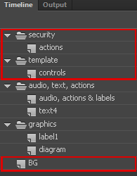
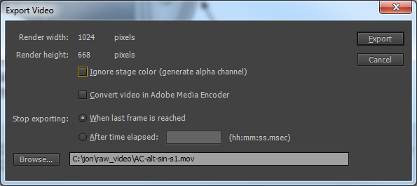
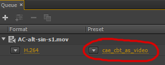
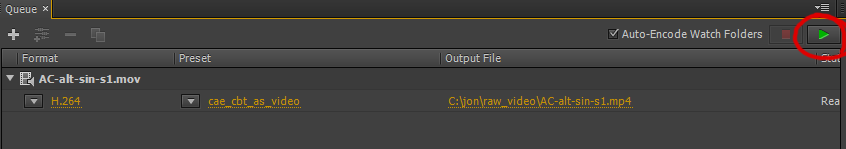

Flash CC has a new feature: File > Export > Expot Video. This renders a file as a swf and then captures a video from this swf. All movie clips and actionscript (if you've added and AS3) run as normal.
Flash CC does not support Actionscript 2.0 - all of our CBTs use AS2. When we update a file to Flash CC, all of the actionscript will stop functioning. For this reason, we need to copy our source files and use the copies to create our videos.
For this example I will use the AC Electrics lesson AC-alt-sin.
You'll need a folder on your local C drive to store the exported video - the exported videos are massive and would quickly fill the L drive. As we don't need to keep the exported videos (we only need the encoded and optimised files) they can be deleted when you need the space back. Create the folder C:\raw_video (or any other local location of your choice).
Copy the folder L:\cbt_source\atpl_ac electrics\content\AC-alt-sin to L:\cbt_video_source\atpl_ac_electrics.
You'll then need to do the following for each scene....
When you see the warning about Actionscript 3, just click OK.
Delete the layers and folders, security, actions, template, controls, BG:
Edit the textbox movie clip, mc_textBox, and make the textbox colour #e2e2e2.
In the next step we will change the background colour of the move to pure white (#ffffff). Scan through the movie and look for any white graphics or text that would be invisible against a white background. You'll need to change the colour of anything that would become invisible. Set any white text to black.
Open the movie properties (Ctrl-J) and set the background (Stage color) to pure white (#ffffff). Set the stage vertical size to 668 pixels. When you confirm you should see that the movie no longer has empty space below the textbox.
Open the Publish Settings (Ctrl + Shift + F12). Click on the browse button by 'Output file' and then click Save, and then OK. (Flash should default to the same location as the fla).
Go to File > Export > Export Video and export with the following settings (you'll need to chnage the local to your local folder):
Flash will produce .mov files - and very large ones at that. We need .mp4 files for HTML5 video - this will cover most browsers and devices. We also need to optimize our files to get file sizes down to a reasonable value.
Use Adobe Media Encoder CC to produce .mp4 files. Drag your .mov file(s) to the 'Queue' area of Media Encoder.
Note: you will need to add a cae_cbt_as_video profile if you don't already have it (see next page).
Choose the encoding preset to use for your videos:
Note: If you select all of your videos you can set all presets simultaneously.
When you have added all of your videos and set the preset, click 'Start' to begin encoding:
